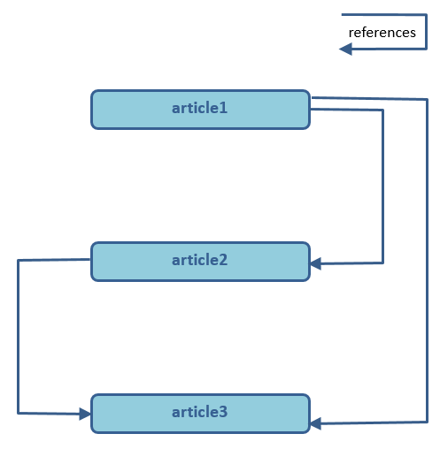
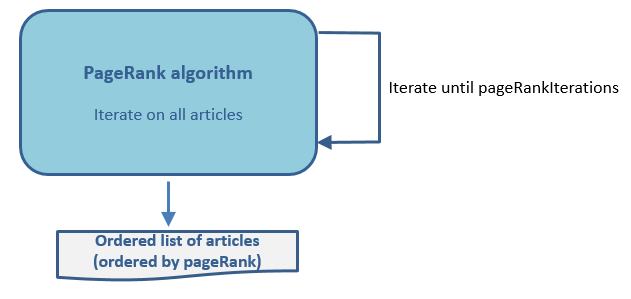
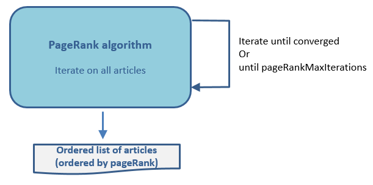
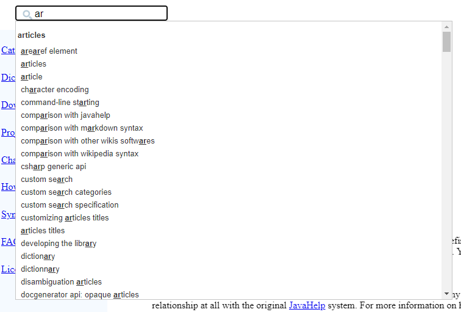
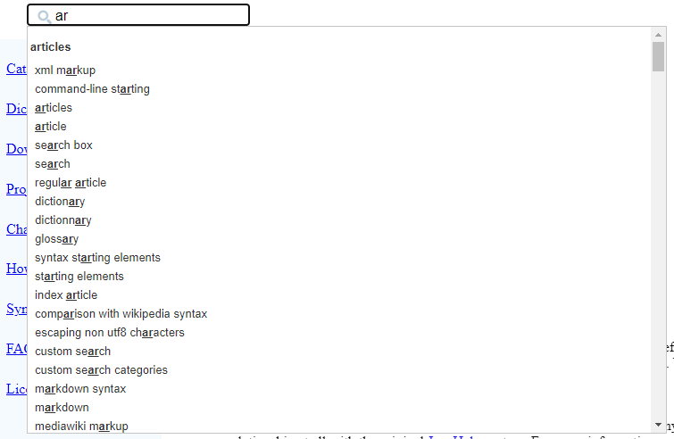

Home
Categories
Dictionary
Download
Project Details
Changes Log
What Links Here
How To
Syntax
FAQ
License
PageRank
1 Overview
2 Fixed number of iterations type
3 Convergence type
3.1 Default properties values
4 Performance
5 Example
6 Notes
7 See also
2 Fixed number of iterations type
3 Convergence type
3.1 Default properties values
4 Performance
5 Example
6 Notes
7 See also
It is possible to set and configure a PageRank algorithm to sort articles in the search results. The associated options are:
The algorithm is based on several iterations on the articles to determine their rank, and sort these articles depending on their rank after these iterations. There are two ways to perform the iterations:
For example, suppose that we have the following wiki structure:
The default order of the Search is:
Using the algorithm with the default value does not seem to have a significant impact on the performance of the generation. For example, using the PageRank algorithm for this wiwki (which has a little les than 200 articles) takes less than 5 ms.
It you set the
- "pageRank": set the PageRank algorithm used to sort the Search results
- "pageRankIterations": the number of iterations for the PageRank algorithm, when the PageRank is using a fixed value for the iterations[1]
The default value of this property is 5
- "pageRankMaxIterations": the maximum number of iterations for the PageRank algorithm, when the PageRank is using a convergence algorithm
- "pageRankConvergeDelta": the value to stop the iterations when the PageRank is using a convergence algorithm
pageRank property specifies the PageRank algorithm used to sort the Search results:- "false": don't use the PageRank algorithm to sort the Search results
- "true" or "fixed": use the PageRank algorithm with a fixed number of iterations to sort the Search results. The "pageRankIterations" property specifies the number of iterations
- "converge": use the PageRank algorithm to converge to obtain the final rank of the articles and sort the Search results. The "pageRankMaxIterations" property specifies the maximum number of iterations, and the "pageRankConvergeDelta" the value to use for the convergence
Overview
PageRank is an algorithm used by Google Search to rank web pages in their search engine results. PageRank works by counting the number and quality of links to a page to determine a rough estimate of how important the website is. This algorithm is used in the wiki generation with internal wikilinks (which are references in the wiki). In our case this works by counting the outgoing links from each articles, and the incoming links to each article.The algorithm is based on several iterations on the articles to determine their rank, and sort these articles depending on their rank after these iterations. There are two ways to perform the iterations:
- Use the PageRank algorithm with a fixed number of iterations to obtain the final rank of the articles and sort the Search results
- Use the PageRank algorithm to converge to obtain the final rank and obtain the Search results
For example, suppose that we have the following wiki structure:

The default order of the Search is:
- article1
- article2
- article3
- article3
- article2
- article1
Fixed number of iterations type
If we set the "pageRank" property to "true" or "fixed", we apply the iterations for the "pageRankIterations" times:
Convergence type
If we set the "pageRank" property to "converge", we apply the iterations until for each article the difference between rank before the iteration and the rank the iterationafter is less than "pageRankConvergeDelta", or until we achieved the "pageRankMaxIterations" number of iterations.
Default properties values
- The default value of the "pageRankConvergeDelta" property is 0.001, which appears to be generally well adapted to the desired result
- The default value of the "pageRankMaxIterations" property is 100. Normally the algorihm will converge with less than 10 iterations
Performance
Main Article: Performance
Using the algorithm with the default value does not seem to have a significant impact on the performance of the generation. For example, using the PageRank algorithm for this wiwki (which has a little les than 200 articles) takes less than 5 ms.
Example
On this wiki, if you don't set thepageRank option, you will have the following results if you type ar:
It you set the
pageRank option, you will have the following results if you type ar:
Notes
- ^ The default value of this property is 5
See also
- Search: This article is about the Search box which is shown on articles
×

Categories: Search